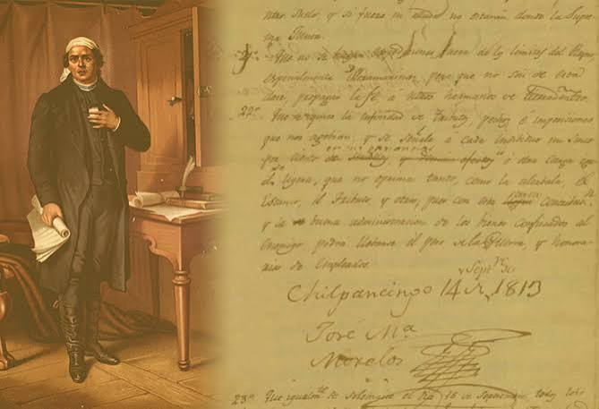
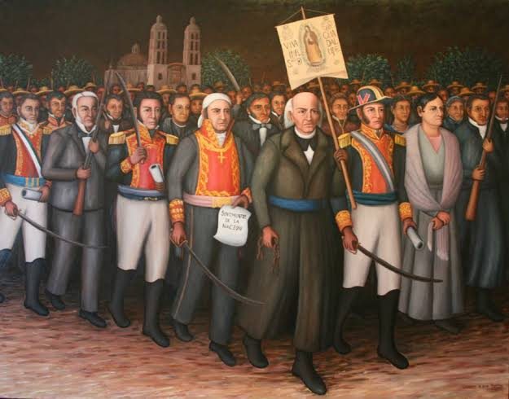
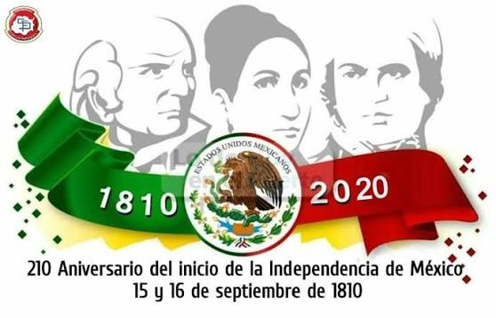
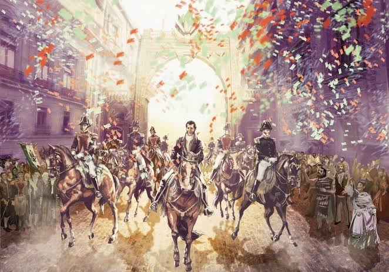
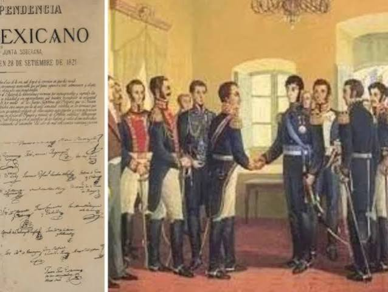
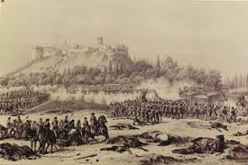

Fechas Importantes
Promulgación de los Sentimientos de la Nación
Por José María Morelos y Pavón durante la apertura del Congreso de Anáhuac en Chilpancingo, los Sentimientos de la Nación constituyeron el primer ideario político republicano de México al declarar la independencia absoluta de España, la soberanía popular, la abolición de la esclavitud y las castas, la prohibición de la tortura y la obligación del Estado de moderar la opulencia y la indigencia para garantizar la igualdad social.

Grito de Dolores (Noche de la Conmemoración)
Encabezado por el cura Miguel Hidalgo y Costilla en la madrugada del 15 de septiembre de 1810 en la parroquia de Dolores, Guanajuato, el Grito fue la convocatoria armada convocada tras descubrirse la conspiración de Querétaro, donde Hidalgo llamó a la población —en su mayoría campesina e indígena— a levantarse contra el mal gobierno colonial y las autoridades virreinales, proclamando la defensa de la religión católica y la figura del rey Fernando VII, un suceso que marcó el inicio formal del proceso de Independencia de México.

Aniversario del Inicio de la Independencia
El Aniversario de la Independencia de México se conmemora oficialmente cada 16 de septiembre —antecedido por la ceremonia cívica del "Grito" la noche del 15 de septiembre encabeza por los mandatarios en los balcones gubernamentales— mediante desfiles militares y festividades populares en todo el país para conmemorar el inicio de la gesta insurgente de 1810, consolidándose como la fiesta patria de mayor relevancia en la memoria e identidad nacional.

Consumación de la Independencia de México
Ocurrida el 27 de septiembre de 1821 con la entrada triunfal del Ejército Trigarante a la Ciudad de México, la consumación de la Independencia fue el resultado del acuerdo político entre el general realista Agustín de Iturbide y el líder insurgente Vicente Guerrero plasmado en el Plan de Iguala, que unificó a las fuerzas opuestas tras once años de guerra bajo las tres garantías —religión, independencia y unión— para poner fin al dominio español e instaurar formalmente el primer imperio de la nación mexicana.

Firma del Acta de Independencia
Firmada el 28 de septiembre de 1821 en el Palacio Nacional por los miembros de la Suprema Junta Provisional Gubernativa convocada por Agustín de Iturbide, el Acta de Independencia del Imperio Mexicano constituye el documento jurídico fundador que declaró formalmente a la nación como un Estado soberano e independiente de la corona española tras tres siglos de dominio colonial, estableciendo la restitución de sus derechos y la creación de su primer gobierno independiente.

Defensa del Castillo de Chapultepec
En septiembre de 1847, las fuerzas armadas invasoras de Estados Unidos, bajo el mando del general Winfield Scott, avanzaron sobre la Ciudad de México en la fase final de la Guerra de Intervención Estadounidense. El Castillo de Chapultepec, que albergaba al Colegio Militar, se convirtió en el último bastión defensivo antes de la capital. Estaba resguardado por unos 800 soldados del ejército regular, el Batallón de San Blas comandado por el coronel Felipe Santiago Xicoténcatl, y alrededor de 50 cadetes que decidieron voluntariamente quedarse a combatir.
